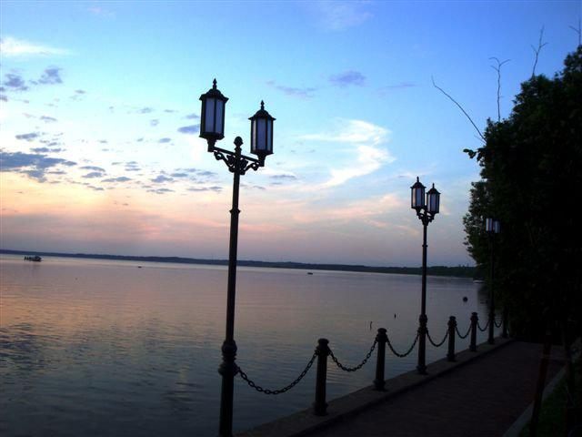

Мужской монастырь Переславской епархии Русской православной церкви, расположенный на северной окраине города Переславля-Залесского, рядом с национальным парком Плещеево озеро. Один из древнейших монастырей России. Посвящён святому Никите Великомученику.

Спаcо-Преображенский собор в Переславском кремле заложен Юрием Долгоруким в 1152 году. Достроен при Андрее Боголюбском в 1157. Функционирует как филиал городского музея-заповедника.

Священный камень близ Плещеева озера, Переславля-Залесского, Александровой горы и древнего городища Клещин. Это один из немногих подлинных ритуальных объектов, сохранившихся со времён языческой Руси. Находится на территории национального парка «Плещеево озеро».

Озеро на юго-западе Ярославской области России. Входит в состав национального парка «Плещеево озеро».

Частный технический музей, где собраны натурные образцы узкоколейной железнодорожной техники, а также сопутствующие им машины и механизмы конца XIX — первой половины XX веков